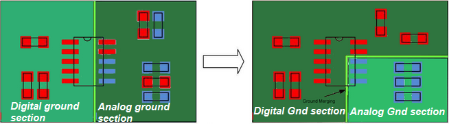
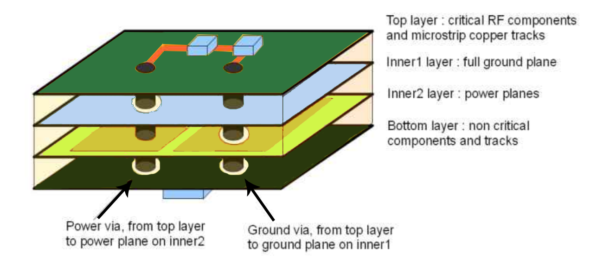
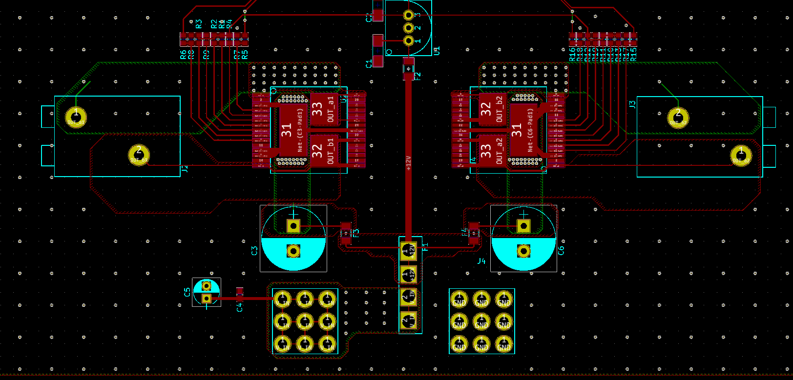

PCB Design Tips
Some of these tips are geared towards KiCad
Layout
- If possible, put all parts on one side of the board
- Use 0.025" or 0.050" grid spacing
- User the square pad on a footprint to mark the polarity, i.e., make all square pads either ground or power
- If possible, have data lines run left-to-right on one side of a board and have them run top-to-bottom on the other. This helps to reduce cross talk. Put another way, have your signal lines running in different directions on different layers of the board
- Distance between traces: 0.010" - 0.007"
- Avoid traces that turn 90 degrees, always curve them
- For debugging, make signal pads easily accessible to debugging
- Keep power and control grounds separate
- Keep digital and analog grounds separate
- Probably want to have a filter on the analog ground, especially if you cannot keep them separate
- When you test continuity, be aware that a good connection should have < 1 ohm of resistance. However, it will still beep with > 1 ohm of resistance which really indicates a cold solder joint. This joint will fail at some point
- Choosing components the same size as the trace will reduce impedance matching issues
- Separate analog and digital ground planes

Multilayer PCB

- Place high frequency traces over a solid ground plane
- Use vias connect components with power and ground in the shortest path possible
- Layout of the layers:
- Layer 1: High frequency components
- Layer 2: Ground plane
- Layer 3: Power plane made as large as possilbe to reduce impediance
- Layer 4: Other lower frequency parts
Power
- Avoid daisy chaining part’s power together; instead, make power rails and branch each part off of the main
- Watchout for vias breaking up power/ground plane and causing:
- Power forced through narrow routes, making hot spots on the PCB
- Simlar to running high current through small traces
- Return path must travel farther around lots of vias and creating large ground loop
- Analogy: rivers create choke points where lots of traffic must cross via a bridge
- Power forced through narrow routes, making hot spots on the PCB
- Make power traces larger to handle in-rush currents
- Always use a ground pour or ground plane
- Long power lines act as antennas and pick up RF noise. Use capacitors to filter the noise out and place as close to the IC power pin as possible
- Slow frequency noise: 1-10 uF
- Medium noise: 0.1-1 uF
- High Frequency noise: 0.001-0.1uF
High Power
copper weights of 1oz or 2oz carrying currents in the mA to tens of amps range are typically sufficient
When doing high power PCBs, plan to handle shorts with things like fuzes
For high current applications, like feeding motors/actuators, put capacitors as close to the motor/actuator as possible and use 10uF-100uF as buffers
Traces widths (use the calculator in KiCad):
Width [in] Width [mm] Amps 0.010 0.254 0.3A 0.015 0.381 0.4A 0.020 0.508 0.7A 0.025 0.635 1.0A 0.050 1.27 2.0A 0.100 2.54 4.0A 0.150 3.81 6.0A User copper pours to move lots of current for power and ground:
